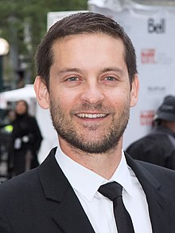

| Nome | Bio | Link na Wikipedia |
|---|---|---|
| Tobey Maguire  |
Tobias Vincent Maguire, mais conhecido por Tobey Maguire (Santa Mônica, 27 de junho de 1975), é um ator e produtor cinematográfico americano que iniciou sua carreira no final da década de 1980. É conhecido por seu papel como Peter Parker/Homem-Aranha na trilogia de filmes Spider-Man de Sam Raimi, bem como por seus papéis em Pleasantville, The Cider House Rules, Wonder Boys, Seabiscuit, Brothers e The Great Gatsby. Ele foi nomeado para os prêmios Globo de Ouro e Screen Actors Guild e recebeu dois Prêmio Saturno, incluindo o de Melhor Ator. | Conheça mais |